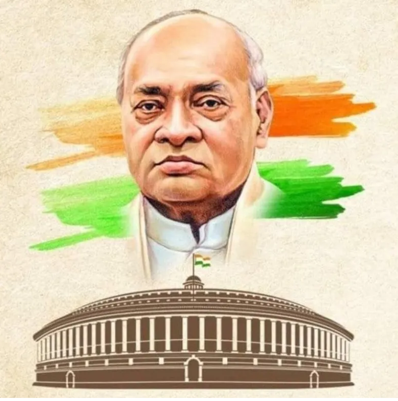

Pamulaparthi Venkata Narasimha Rao was an Indian lawyer and Politician who served as the 8th Prime Minister of India from 1991 to 1996. He is often referred to as the "Father of Indian Economic Reforms".
His ascendancy to the Prime ministership was politically significant in that he was the First from South India (United Andhra Pradesh).
Future Prime Ministers Atal Bihari Vajpayee and Manmohan Singh also continued his Economic Reform Policies.
He employed Manmohan Singh as his Finance Minister to embark on historic economic transition. Singh launched India's globalisation angle of the reforms that implemented the International Monetary Fund (IMF) policies to rescue the almost bankrupt nation from economic collapse. Rao was also referred to as Chanakya for his ability to steer economic and political legislation. 11th President of India APJ Abdul Kalam described Rao as a "patriotic statesman who believed that the nation is bigger than the political system".
He spoke 17 languages and interests in a subjects such as Literature and Computer Science. His achievements include steering India through the 1991 Economic Crisis, establishing Diplomatic Relations with Israel, starting India's Look East Policy, rekindling India's Nuclear Programme, Defeating United Nations Resolution in 1994, Effectively handling and crushing Insurgency in Punjab, Policies against terrorism in Kashmir, and Diplomatic Relations with Taiwan.
Narsimha Rao's term as Prime Minister was an eventful in India's history. Rao died in 2004 of a heart attack in New Delhi. He was cremated in Hyderabad
read more.
